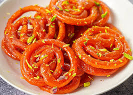

chicken is deeply savory and rich, with warming, bright, bitter counterpoints.
Fish is satisfying, nutritious and packed with a burst of Indian flavors.

french fries, side dish or snack typically made from deep-fried potatoes that have been cut into various shapes.
roti is a traditional flatbread from the Indian subcontinent.
dosa is a thin savory crepe in South Indian cuisine made from a fermented batter of ground black gram and rice

Porotta is a layered Indian and Sri Lankan flatbread made from Maida or Atta.

jilebi is a popular sweet snack in South Asia, the Middle East, Africa and Mauritius.